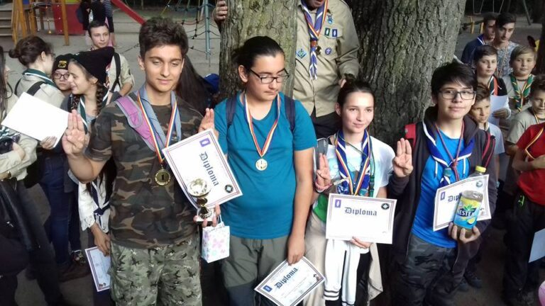

Am câștigat Roza Cercetașilor!

Încă o poveste din viața cercetașilor de la Cabana Scout începe sâmbătă, 23 septembrie, dimineață de la ora 9, moment în care ne-am întâlnit la Metrou Aviatorilor cu toții, exploratori si temerari. După un lung drum cu autobuzul, ajungem, într-un final, la Pădurea Băneasa. În acest loc urma să ne petrecem toată ziua pe care o aveam în față. Roza Cercetașilor este activitatea la care am participat cu 3 patrule (2 de exploratori și una de temerari) în acea sâmbătă.
Datorită CL Baden-Powell care a lansat invitația și a organizat totul, cercetașii de la CL Panaitescu și Cabana Scout au avut ocazia să acumuleze sau să își amintească cunoștințele despre supraviețuire, prim ajutor si orientare. După ce liderii au realizat traseul pe hartă al posturilor care trebuiau parcurse de patrulele înscrise și explicarea regulamentului, acestea au pornit la drum. Provocările, precum realizarea unui adăpost, echilibrul pe o sfoară sau tras cu arcul și premierea de la final au reușit să motiveze cercetașii să dea tot ce au mai bun.
Cele două patrule de exploratori din Cabana Scout (Șandru și Harem) au primit locul I și locul III, iar patrula de temerari (Șuncă), a primit locul IV.
Mulțumim CL Baden-Powell pentru invitație, ne-am bucurat să participăm la acest eveniment și așteptăm edițiile următoare!